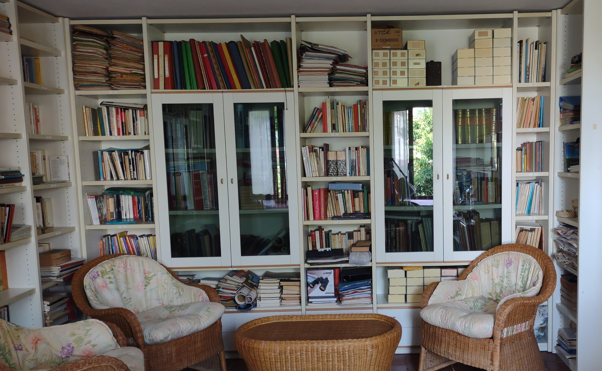

Taccuino #1
Perché Casa Donatalina
29 luglio 2026
Oggi nasce ufficialmente un piccolo progetto a cui tengo molto: Casa Donatalina.
È uno spazio dedicato ai libri della mia famiglia. Libri diversi tra loro, ma uniti da un filo comune: la volontà di conservare e condividere storie che meritano di continuare a vivere.
Vorrei iniziare presentandovi il primo.
È il romanzo scritto da mio padre.
Quando è venuto a mancare, il manoscritto era rimasto incompiuto. Ho deciso di raccogliere i suoi appunti, studiare il suo stile e portare a termine il lavoro con un obiettivo preciso: fare in modo che fosse, il più possibile, il suo libro, non il mio.
È stato un percorso lungo, emozionante e, a tratti, difficile. Ma anche uno dei modi più belli che abbia trovato per continuare un dialogo con lui.
Se amate le storie nate dalla passione, dalla memoria e dal desiderio di non lasciare che le parole vadano perdute, spero che questo libro possa incuriosirvi.
Nei prossimi taccuini vi racconterò qualcosa in più sul romanzo, sui personaggi e sul percorso che mi ha portata fino a qui.
Benvenuti in Casa Donatalina.
Le storie continuano a vivere quando vengono condivise.
Se questo racconto vi ha ricordato una persona, un luogo o un libro importante, mi farà piacere saperlo.